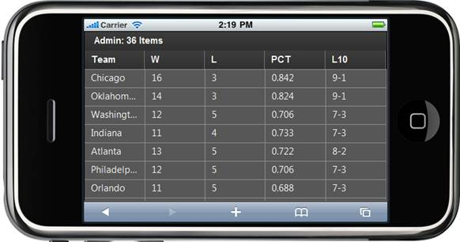

1. Create a model in the application (Refer to Getting Started>Adding a Model to the ASPX Application).
2. Create a strongly typed view (Refer to How to>Strongly Typed View).
3. In the view you can use its Model property in Datasource() in order to bind the data source.
|
View [ASPX] <%=Html.MobSyncfusion().Grid<Standings>("grid") .Datasource(Model).Caption("Foot Ball Team Standings") .ActionMode(MobActionMode.Server) .Column(col => { col.Add(c => c.Team).HeaderText("Team"); col.Add(c => c.Won).HeaderText("W"); col.Add(c => c.Loss).HeaderText("L"); col.Add(c => c.Percent).HeaderText("PCT"); col.Add(c => c.L10).HeaderText("L10"); })
%>
|
4. Set its data source and render the view.
|
Controller
/// <summary> /// Used to bind the Grid. /// </summary> /// <returns>View page, it displays the Grid</returns> public ActionResult Index() { var data = StandingsDetails.GetData(); return View(data);
} |
5. In order to work with paging and sorting actions, create a Post method for Index actions and bind the data source to the grid as shown in the following code.
|
Controller
/// <summary> /// Paging/sorting Requests are mapped to this method. This method invokes the MobHtmlActionResult /// from the grid. Required response is generated. /// </summary> /// <param name="args">Contains paging properties. </param> /// <returns> /// MobHtmlActionResult returns the data displayed on the grid. /// </returns> [AcceptVerbs(HttpVerbs.Post)] public ActionResult Index(MobGridParams args) { var data = StandingsDetails.GetData(); return data.MobGridJSONActions<Standings>();
} |
6. Run the application. The grid will appear as shown below.

Figure 23: Grid with Data